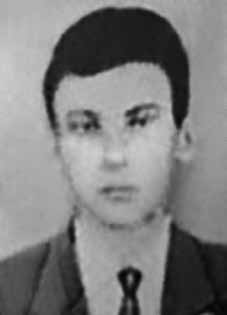

Jonas
José
de Albuquerque
Barros
CIRCUNSTÂNCIAS DA MORTE
Jonas José Albuquerque Barros morreu por ferimento de arma de fogo quando participava de uma manifestação de rua contra a deposição e prisão “manu militari” do governador pernambucano Miguel Arraes, em Recife, no dia 01 de abril de 1964. Estudantes estavam reunidos na Faculdade de Engenharia de Recife quando, aproximadamente, às 14:00 horas o Exército invadiu o prédio e expulsou a todos. Em seguida, os estudantes saíram em passeata pelas principais ruas do Recife, alertando a população sobre o golpe militar. Os estudantes marchavam pelas ruas do Recife, com objetivo de chegar até o Palácio das Princesas, sede do governo, protestando contra o Golpe Militar e buscando apoio popular. Os estudantes estavam com bandeiras do Brasil nos ombros e cantando o Hino Nacional, quando avistaram os militares em um piquete na esquina das ruas Dantas Barreto e Marquês. No momento em que os militares avistaram os estudantes realizaram um disparo para o alto. Os estudantes revidaram com pedras e cocos vazios e continuaram gritando e entoado palavras de ordem em defesa da legalidade democrática. Então, os militares fizeram disparos diretamente para os estudantes, resultando em muitos feridos e dois mortos. Essas informações constam no depoimento de Oswaldo de Oliveira Coelho que, assim, detalha: […] os estudantes Jonas José de Albuquerque Barros, de 17 anos, secundarista do Colégio Estadual de Pernambuco, e Ivan Rocha Aguiar, de 23 anos, acadêmico de Engenharia; que Jonas José de Albuquerque Barros foi atingido mortalmente com um tiro de revólver na boca que estilhaçou seu maxilar, tendo os estilhaços dos seus ossos e jatos do seu sangue atingido minha face e meu peito, tendo Jonas morrido em meus braços; que Ivan Rocha Aguiar também morreu sob minhas vistas […] Sobre a autoria dos disparos o livro “O caso eu conto como o caso foi”, de Paulo Cavalcanti, descreve que: “O major Hugo Caetano Coelho de Almeida, conhecido na caserna como Hugo Fodão, tomou das mãos de um praça uma arma automática e, ele próprio, atingiu dois estudantes, um nas costas, outro no rosto, matando-os”. Jonas José de Albuquerque Barros, juntamente com Ivan Rocha Aguiar, foram as primeiras vítimas do regime militar no estado de Pernambuco. A certidão de óbito registra que seu corpo foi sepultado no cemitério Santo Amaro, em Recife.
Jonas José Albuquerque Barros died from a gunshot wound while participating in a street demonstration against the deposition and “manu militari” arrest of Pernambuco governor Miguel Arraes, in Recife, on April 1, 1964. Students were gathered at the Faculty of Engineering of Recife when, at approximately 2:00 pm, the Army invaded the building and expelled everyone. Then, the students went on a march through the main streets of Recife, warning the population about the military coup. The students marched through the streets of Recife, with the aim of reaching the Palácio das Princesas, the seat of government, protesting against the Military Coup and seeking popular support. The students had Brazilian flags on their shoulders and were singing the National Anthem when they saw the military on a picket line on the corner of Dantas Barreto and Marquês streets. The moment the military saw the students, they fired into the air. The students retaliated with stones and empty coconuts and continued shouting and chanting slogans in defense of democratic legality. Then, the military fired directly at the students, resulting in many injuries and two deaths. This information appears in Oswaldo de Oliveira Coelho's statement, which details: […] students Jonas José de Albuquerque Barros, 17 years old, high school student at Colégio Estadual de Pernambuco, and Ivan Rocha Aguiar, 23 years old, Engineering student; that Jonas José de Albuquerque Barros was fatally shot in the mouth with a revolver shot that shattered his jaw, with the splinters of his bones and jets of his blood hitting my face and chest, with Jonas dying in my arms; that Ivan Rocha Aguiar also died under my eyes […] Regarding the authorship of the shots, the book “O caso eu conta como o caso foi”, by Paulo Cavalcanti, describes that: “Major Hugo Caetano Coelho de Almeida, known in the barracks as Hugo Fodão, took an automatic weapon from the hands of a soldier and, himself, hit two students, one in the back, the other in the face, killing them”. Jonas José de Albuquerque Barros, together with Ivan Rocha Aguiar, were the first victims of the military regime in the state of Pernambuco. The death certificate records that his body was buried in the Santo Amaro cemetery, in Recife.
Jonas José Albuquerque Barros murió por una herida de bala mientras participaba en una manifestación callejera contra la destitución y el arresto “manu militari” del gobernador de Pernambuco, Miguel Arraes, en Recife, el 1 de abril de 1964. Los estudiantes se encontraban reunidos en la Facultad de Ingeniería de Recife cuando, aproximadamente a las 14:00 horas, el Ejército invadió el edificio y expulsó a todos. Luego, los estudiantes realizaron una marcha por las principales calles de Recife, advirtiendo a la población sobre el golpe militar. Los estudiantes marcharon por las calles de Recife, con el objetivo de llegar al Palacio de las Princesas, sede del gobierno, protestando contra el Golpe Militar y buscando apoyo popular. Los estudiantes llevaban banderas brasileñas al hombro y cantaban el Himno Nacional cuando vieron a los militares formando un piquete en la esquina de las calles Dantas Barreto y Marquês. En el momento en que los militares vieron a los estudiantes, dispararon al aire. Los estudiantes respondieron con piedras y cocos vacíos y continuaron gritando y coreando consignas en defensa de la legalidad democrática. Luego, los militares dispararon directamente contra los estudiantes, provocando numerosos heridos y dos muertos. Esta información aparece en la declaración de Oswaldo de Oliveira Coelho, que detalla: […] los estudiantes Jonas José de Albuquerque Barros, de 17 años, estudiante de secundaria del Colégio Estadual de Pernambuco, e Ivan Rocha Aguiar, de 23 años, estudiante de Ingeniería; que Jonás José de Albuquerque Barros fue asesinado de un disparo en la boca con un disparo de revólver que le destrozó la mandíbula, con las astillas de sus huesos y los chorros de su sangre golpeando mi cara y mi pecho, con Jonás muriendo en mis brazos; que Iván Rocha Aguiar también murió ante mis ojos […] Respecto a la autoría de los disparos, el libro “O caso eu conta como o caso foi”, de Paulo Cavalcanti, describe que: “El mayor Hugo Caetano Coelho de Almeida, conocido en el cuartel como Hugo Fodão, tomó un arma automática de manos de un soldado y él mismo golpeó a dos estudiantes, uno en la espalda y el otro en la cara, matándolos”. Jonas José de Albuquerque Barros, junto con Ivan Rocha Aguiar, fueron las primeras víctimas del régimen militar en el estado de Pernambuco. El certificado de defunción registra que su cuerpo fue enterrado en el cementerio de Santo Amaro, en Recife.